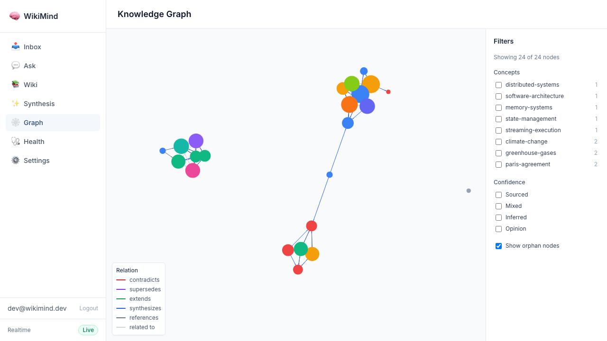
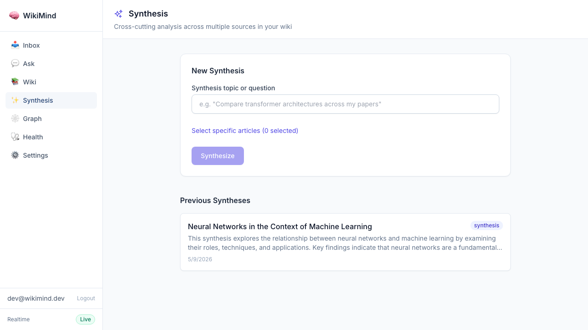
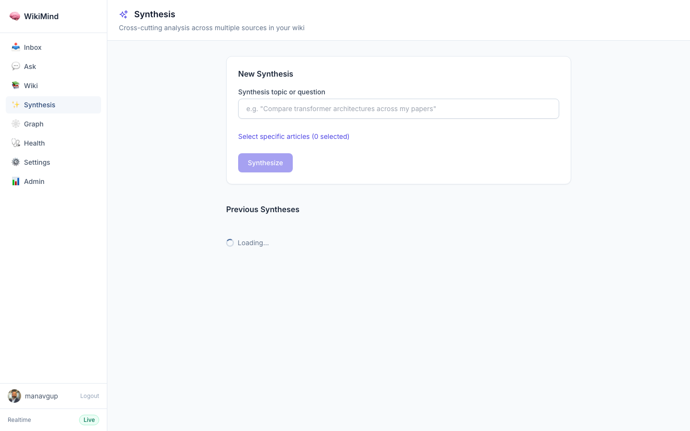

Real evidence: cross-cutting synthesis of multiple articles via API and UI
Posted a synthesis query spanning Machine Learning and Quantum Computing articles. The LLM identified cross-cutting themes.
$ curl -s -X POST http://127.0.0.1:7842/api/wiki/synthesize \
-H "Authorization: Bearer $TOKEN" \
-H "Content-Type: application/json" \
-d '{"query":"How do neural networks relate to machine learning?",
"article_ids":["83434b7d-...","bf036a56-..."]}'
{
"id": "31acb111-be9c-48eb-b87f-30eba8d52a7a",
"slug": "synthesis-neural-networks-in-the-context-of-machine-learning",
"title": "Neural Networks in the Context of Machine Learning",
"query": "How do neural networks relate to machine learning?",
"summary": "This synthesis explores the relationship between neural networks and machine learning by examining their roles, techniques, and applications. Key findings indicate that neural networks are a fundamental component of machine learning, particularly in deep learning, and are trained using methods like backpropagation and gradient descent.",
"themes": [
"Neural Networks as a Core Component of Machine Learning",
"Training Techniques and Applications"
],
"source_count": 2,
"source_article_ids": [
"83434b7d-ea00-4ae1-8ad3-3d0c8bc1683e",
"bf036a56-e540-4c8e-8475-8b1c254c2699"
],
"created_at": "2026-05-09T16:45:48.680368",
"page_type": "synthesis"
}
The wiki graph shows 19 nodes and 87 edges connecting articles, concepts, and synthesis pages.

The synthesis page in the frontend shows the created synthesis article.

$ curl -s http://127.0.0.1:7842/api/wiki/graph -H "Authorization: Bearer $TOKEN"
Nodes: 19, Edges: 87
- Test Staleness Article
- Redis Architecture Deep Dive
- Climate Science Overview
- Machine Learning Fundamentals
- Quantum Computing Algorithms and Applications
... (14 more concept and synthesis nodes)
Evidence generated 2026-05-09 from a live WikiMind instance. All API responses and screenshots are real.

Captured via authenticated Playwright from wikimind.fly.dev